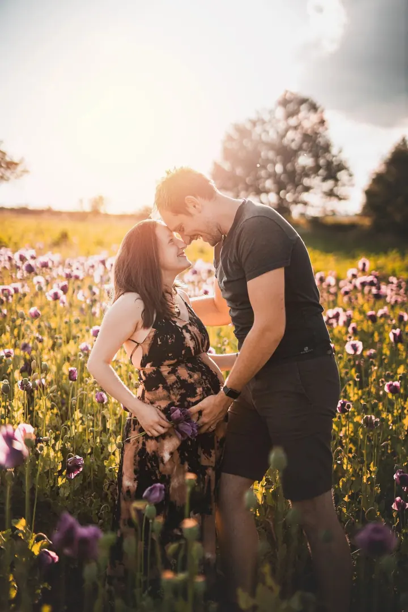
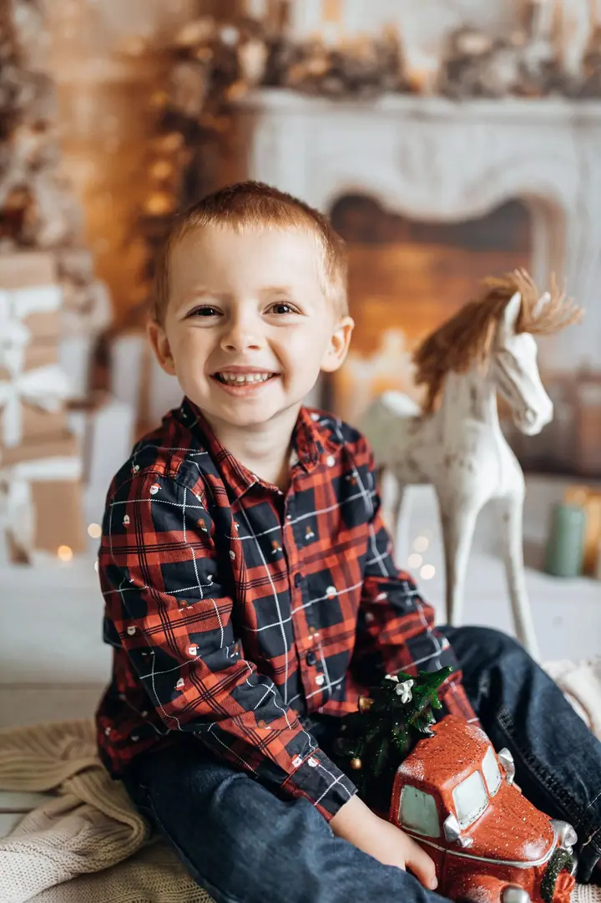
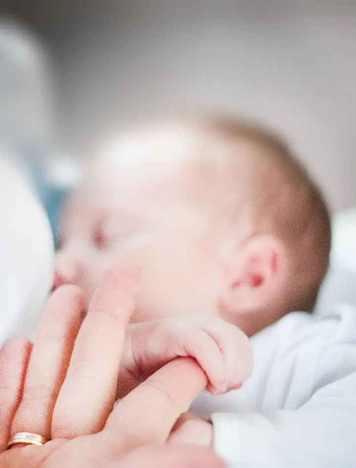
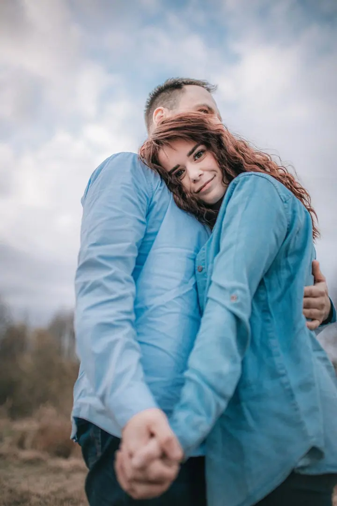

jedna
Svatební focení
Nejraději jsem s vámi od tichých ranních příprav až po poslední paprsky slunce. Před svatbou si spolu sedneme u kávy nebo zavoláme online, abych poznala vaše představy a naladila se na váš den.

Svatební a rodinná fotografka · Telč, Dačice, Vysočina

Jmenuji se Monika Lacinová a jsem svatební a rodinná fotografka z Telče. Fotím svatby, páry a budoucí rodiče i rodiny s dětmi v Telči, Dačicích a okolí, nebo na místech, která máte rádi.
Více o mně
Co fotím
jedna
Nejraději jsem s vámi od tichých ranních příprav až po poslední paprsky slunce. Před svatbou si spolu sedneme u kávy nebo zavoláme online, abych poznala vaše představy a naladila se na váš den.
dvě
Fotím lifestyle formou v přírodě, u vás doma nebo v ateliéru, podle věku dětí 30 až 90 minut. Každý rok také připravuji vánoční focení v Telči.
tři
Uvolněné procházky ve dvou, v poli nebo na místě, které máte rádi. Žádné křečovité pózy, jen vy dva a atmosféra, která vás provází.
Při newborn focení vytvářím klidné prostředí, kde není potřeba nic uspěchat. Jde mi o přirozenost, jemnost a detaily: malé ručičky, vlásky, očička.
Opravdovost, něha, emoce. Atmosféra vašeho dne.


Za objektivem
Bydlím v Telči a fotím hlavně tady, v Dačicích a po celé Vysočině, po domluvě ráda vyrazím i dál. Ke každému klientovi přistupuji individuálně a vždycky hledám řešení, aby byly obě strany spokojené.
Na fotkách chci zachytit vás, takové, jací skutečně jste. Do každého snímku vkládám kousek sebe, ale hlavní je opravdovost, něha, emoce a atmosféra vašeho dne. Věřím v osobní kontakt, otevřenost a v to, že každý pár i každá rodina má svůj vlastní rytmus.
Pokud nejste zvyklí stát před objektivem, nemusíte se bát. Všechno vám srozumitelně vysvětlím a navedu vás do přirozených póz. S dětmi mám trpělivost a v posledním roce jsem se vzdělávala ve stylizovaném newborn focení, takže teď ráda fotím i ty úplně nejmenší.
Monika
Vyplňte formulář, vyberte druh focení a napište mi svoje přání a představy. Ozvu se vám co nejdřív.
U svatby si spolu sedneme u kávy nebo zavoláme online. U rodinného focení se domluvíme na místě, ať je to příroda, váš domov nebo ateliér.
Fotíme v klidu a bez spěchu, lifestyle formou. Střídáme společné záběry, menší skupinky i portréty a já vás vším provedu.
Hotové fotky dostanete do vlastní online galerie, obvykle do 6 týdnů.
Portfolio
Otázky
Hlavně v Telči, Dačicích a okolí, v Kraji Vysočina a v Jihočeském kraji. Po domluvě přijedu i jinam, svatby fotím po celé České republice. Cesta se počítá 7 Kč za kilometr.
Rodinné, párové, těhotenské i portrétní focení stojí 2 400 Kč a dostanete 30 upravených elektronických fotek ve vlastní online galerii.
To se stává a nevadí to. Focení přizpůsobím dětem i miminkům a podle věku dětí trvá 30 až 90 minut, takže na nic nespěcháme.
Stylizované newborn focení stojí 3 800 Kč za 10 elektronických fotek. Nabízím také lifestyle newborn focení u vás doma.